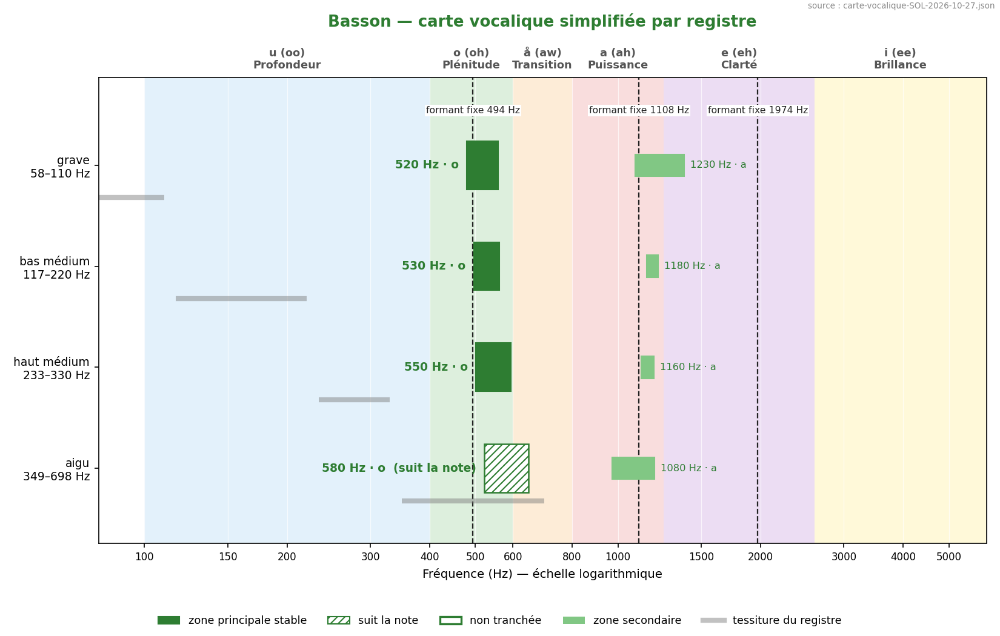
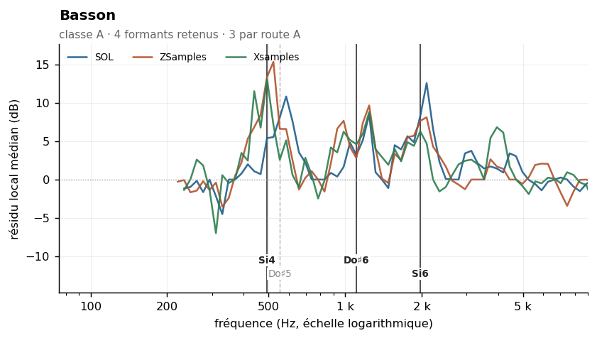
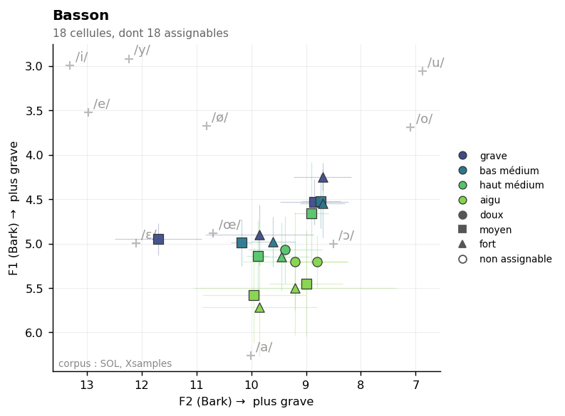

Bassoon
Sommaire › Les bois
| Classe | Provenance | Échantillons | Tessiture | Formants établis |
|---|---|---|---|---|
| A | IRCAM | 126 | A | 3 |
| Formant | Note | Corpus | Localisation |
|---|---|---|---|
| 494 Hz | Si4 | Xsamples ZSamples | |
| 1108 Hz | Do♯6 | SOL ZSamples Xsamples | localisé |
| 1974 Hz | Si6 | SOL ZSamples Xsamples | localisé |



Statut des formants — révision du 26/10/2026
Confrontation des cinq corpus. Provenance de ce corpus : IRCAM (FullSOL2020).
Formant Statut 554 Hz présent dans le seul corpus SOL 1108 Hz route A — SOL + Xsamples + ZSamples au même point de grille, 1108 Hz · zone vue par SOL, Xsamples, ZSamples · pic localisé, Q = 4.0 1974 Hz route A — SOL + ZSamples au même point de grille, 1974 Hz · zone vue par SOL, Xsamples, ZSamples · pic localisé, Q = 7.8
etendue_residudans l'en-tête n'est pas une largeur de bande : c'est l'étendue du résidu de la méthode 8, souvent une butée de plage. Les largeurs mesurées sont dans_LARGEURS-DE-BANDE.md.
Méthode 8 — enveloppe composite par agrégation des amplitudes harmoniques. Mesure sur les 126 échantillons ordinario, spectres moyens recalculés depuis les WAV en excluant le transitoire d'attaque (onset + 200 ms, fenêtre de 1,5 s).
Le basson est le cas idéal pour cette méthode, pour une raison quantifiable : avec une médiane de 57 harmoniques par note (de 17 à 90 selon le registre), chaque note échantillonne densément la réponse du tuyau sur toute la plage analysée. L'agrégation des 126 notes éclaire donc le filtre par autant de sources différentes, ce qui est la définition physique même du formant.
La notion de formant est ici pleinement pertinente. Trois arguments convergent :
La méthode 6 (enveloppe vraie à ordre cepstral adaptatif) est utilisable note par note, avec des ordres allant de 24 à 264 selon la hauteur. Elle donne 538 Hz, σ = 87 Hz, en accord direct avec le premier formant composite.
| Zone | Résidu | Largeur −3 dB | Notes distinctes | Verdict |
|---|---|---|---|---|
| 554 Hz | +7,5 dB | 523–659 Hz | 7 | retenu |
| 1 108 Hz | +4,7 dB | 987–1 396 Hz | 18 | retenu |
| 1 974 Hz | +7,6 dB | 1 759–2 216 Hz | 26 | retenu |
| 3 320 Hz | +2,5 dB | très large | 34 | fragile |
Le résidu est l'écart, en dB, entre l'amplitude mesurée d'un harmonique et la médiane locale des harmoniques de la même note dans une fenêtre de ±3/4 d'octave. Un résidu positif signale une résonance plus étroite que ~1,5 octave.
Chaque bande doit rester élevée quel que soit le rang harmonique qui y tombe : c'est le test direct de l'indépendance à la hauteur. Un pic qui ne serait qu'un effet de hauteur s'effondre dès que le rang change.
| Zone | k = 2–3 | k = 4–7 | k = 8–15 | k ≥ 16 | Robustesse fenêtre |
|---|---|---|---|---|---|
| 554 Hz | +10,4 | +8,1 | +6,3 | — | oui |
| 1 108 Hz | +5,3 | +2,1 | +5,9 | −2,2 | oui |
| 1 974 Hz | — | +7,7 | +8,3 | +9,1 | oui |
| 3 320 Hz | — | +0,4 | +1,2 | +2,1 | non |
Le pic à 3 320 Hz est classé fragile : ses résidus sont faibles et il ne survit pas au changement de fenêtre de redressement (±1/2 et ±1 octave). Il traduit probablement une tendance large plutôt qu'une résonance.
Le cas de 1 108 Hz mérite une note : le résidu devient négatif aux rangs ≥ 16, c'est-à-dire pour les notes les plus graves de la tessiture. La résonance est donc bien réelle mais moins marquée dans le registre grave — à vérifier par une mesure par registre.
| Descripteur | Valeur | Lecture |
|---|---|---|
| Pente spectrale médiane | −14,7 dB/octave (σ 1,7) | décroissance modérée et très régulière |
| Harmoniques par note | 57 [17–90] | spectre très riche, mesure densément échantillonnée |
| Balance impair − pair | −3,3 dB | tuyau conique : harmoniques pairs présents |
| Enveloppe vraie (méthode 6) | 538 Hz, σ 87 | confirme le premier formant |
Valeurs de la littérature telles que relevées dans les tableaux de l'étude précédente (à revérifier aux sources primaires).
| Source | Valeur annoncée | Notre mesure | Accord |
|---|---|---|---|
| Backus (1969) | 440–500 Hz | 554 Hz | proche |
| Giesler (1985) | 500 Hz, o-ähnlich | 554 Hz | bon |
| Meyer (2009) | ~500 Hz et ~1 000 Hz | 554 et 1 108 Hz | bon sur les deux |
| Cepstre mai 2026 | 527 Hz | 554 Hz | bon |
Ancien pipeline specenv |
F1 = 495 Hz | 554 Hz | proche |
C'est le seul instrument dont la valeur de l'ancien pipeline ressort intacte, et pour une raison précise : avec un f0 maximal de 622 Hz, une grande partie de la tessiture du basson reste sous la limite de validité du lissage Orchidea à l'ordre 160 (276 Hz), et le reste n'en est pas très loin. Le formant à 1 974 Hz, en revanche, est nouveau et n'apparaît dans aucune source consultée.
Découpage de référence (Data/registres.md) :
grave A#1–A2 · bas médium A#2–A3 · haut médium A#3–A4 · aigu à partir de A#4.
Mesure par registre : non encore effectuée avec la nouvelle méthode. À faire, en particulier pour trancher le comportement de la bande 1 108 Hz dans le grave.
Rang du formant dans son propre spectre : 50 % signifie que les deux méthodes ne s'accordent pas mieux là qu'ailleurs. Voir ../_APPARIEMENT-LPC.md.
| Formant | Statut | Rang |
|---|---|---|
| 494 Hz | route A | 2,9 % |
| 554 Hz | 1 corpus | 0,0 % |
| 1108 Hz | route A | 29,4 % |
| 1974 Hz | route A | 5,9 % |
Cet instrument est une anche double, et le LPC y échoue par construction : il suppose une source filtrée par une cavité séparable, alors que l'anche et la perce sont couplées et que la résonance de l'anche fait partie de la source. Les six formants des anches doubles sont tous sous la médiane. Ses formants restent établis par la route A — le critère le plus exigeant — mais ne peuvent pas revendiquer de corroboration LPC.
Part de pics non localisables — l'enveloppe n'y redescend pas de 3 dB des deux côtés, donc le formant n'a pas de largeur mesurable. Voir ../_LARGEUR-PAR-REGISTRE.md.
| doux | moyen | fort | |
|---|---|---|---|
| tous registres | 10 % | 9 % | 9 % |
| grave | 17 % | 13 % | 11 % |
| bas médium | 5 % | 10 % | 9 % |
| haut médium | 4 % | 5 % | 0 % |
| aigu | 0 % | 0 % | 10 % |
Effet doux → fort : +1 point. Effet négligeable.
Oui, et c'est le seul cas de l'étude. Rapport mesure / témoin :
| Maximum | Mesure | Témoin | Rapport |
|---|---|---|---|
| F1 | 44,4 % | 7,8 % | ×5,7 |
| F2 | 23,1 % | 3,1 % | ×7,5 |
Les cellules concernées, formant par formant :
| Formant | Cellules < 1,0 dt | dont < 0,5 dt | Corpus |
|---|---|---|---|
| 494 Hz | 16 | 8 | SOL · Xsamples · ZSamples |
| 554 Hz | 13 | 8 | SOL · Xsamples · ZSamples |
| 1 108 Hz | 11 | 6 | SOL · Xsamples · ZSamples |
Témoin : les propres formants de l'instrument transposés de ±2 à ±6 demi-tons, ce qui conserve leur nombre et leur espacement. Voir ../_COINCIDENCES-F2.md.
20 paires calculées. Fusion moyenne : 31 %. Voir ../_MELANGES.md.
| Couleur nouvelle avec | Se fond avec | ||
|---|---|---|---|
| Clarinette contrebasse en Sib | 58 % | Trombone ténor | 51 % |
| Clarinette en Mib | 57 % | Cor anglais | 39 % |
| Tuba basse | 48 % | Flûte basse | 33 % |
À compléter. Pistes ouvertes, non encore mesurées :
Aucun graphique produit à ce stade (décision du 23/10/2026 : tableaux d'abord).
Figures prévues, à placer dans ../Versions-html-and-docx/media/ :
| Fichier prévu | Contenu |
|---|---|
basson_composite.png |
enveloppe composite : résidu médian par bande de 1/12 d'octave, avec couverture |
basson_rangs.png |
résidu par groupe de rang harmonique, pour chaque formant retenu |
basson_te_registres.png |
enveloppes vraies superposées, une par registre |
specenv d'Orchidea (lissage cepstral
à ordre fixe 160, non valide au-dessus de 276 Hz) et du Fp par centroïde (grandeur bornée
par sa propre fenêtre d'analyse, ne mesure pas une résonance). Passage à la méthode 8 sur
les fichiers spectrum non lissés, puis recalcul depuis les WAV avec exclusion de l'attaque.